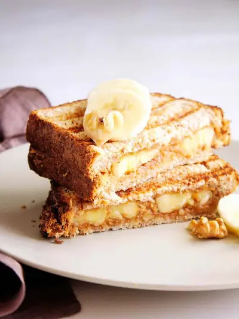

Healthy Banana Peanut Butter Sandwich

Ingredients
- 2 Slices Sprouted Wheat Bread (like Ezekiel)
- 1 tsp chopped walnuts
- ½ banana sliced
- sprinkle of cinnamon
- 1 tbsp almond butter
- 1 tbsp peanut butter
- ½ tsp maple syrup or honey
Steps
- Spread the peanut & almond butter mixture on both slices of bread, and top one half with sliced bananas
- Add chopped walnuts on top of the banana slices along with a sprinkle of cinnamon and a drizzle of honey.
- Top with the other slice of bread (that already has peanut/almond butter spread on it), and put into the panini press (or grill in a griddle pan if you don't have a panini press)
- Once the top has browned and is slightly crispy, remove from panini press and let cool for 1-2 min.
- Cut sandwich in half and enjoy!
Recipe by Anjali Shah · The Picky Eater, from The Picky Eater. Saved here for personal use; the original has the full notes, tips and photos. Open original